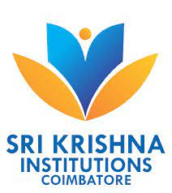

Sri Krishna College of Technology aspires to be recognized as one of the pioneers in imparting world class technical education through technology enabled innovative teaching learning processes with a focus on research activities to cater, to the societal needs.
Nestled at the foothills of the Western Ghats, located in a sprawling 52-acre campus in Kovaipudur, Coimbatore, Sri Krishna College of Technology (SKCT) is a vibrant institute of higher education established in 1985 promoted by Sri Krishna Institutions. An extraordinary freedom of opportunity—to explore, to collaborate and to challenge oneself is the hallmark of the Institute. Being an autonomous institute, affiliated to Anna University, Chennai, and approved by AICTE, New Delhi, SKCT lays strong emphasis on collaborative research and stands apart from other institutes by its participatory work culture, student care programmes and high industry interaction. In a span of 37 years, it has emerged as one of the premier engineering colleges for learning, discovery and innovation due to the dynamic leadership of the Chairperson and Managing Trustee Smt S Malarvizhi. Being an acclaimed educationalist, she continues to contribute profusely for the glory and happiness of advancing generations. The college is accredited with A Grade by NAAC and eligible undergraduate programs are accredited by the National Board of Accreditation (NBA), New Delhi. The college offers 8 undergraduate programmes and 6 postgraduate programmes in engineering, technology, and Management Studies.
| Courses | Seats |
|---|---|
| Mech | 180 |
| CSE | 180 |
| ECE | 180 |
| Civil | 180 |